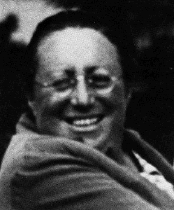
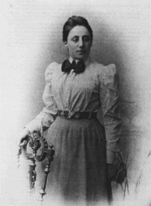
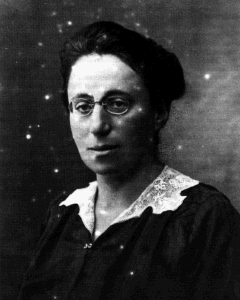
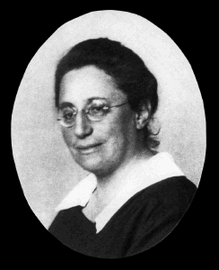
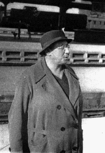
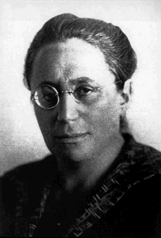
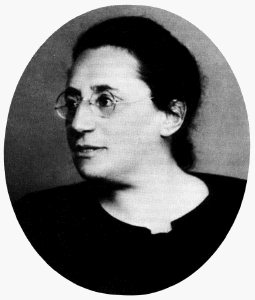

Emmy Noether (1882 - 1935)

Herkunft und Schulzeit
1882
Amalie Emmy Noether wurde als das erste Kind jüdischer Eltern am 23. März 1882 in
Erlangen geboren. Der Vater, Prof. Dr. Max Noether, ist Professor für Mathematik an der
Universität; die Mutter ist Ida Noether, geb. Kaufmann. Emmy Noether hat drei jüngere
Brüder.
1889-1897
Sie besucht die Städtische Höhere Töchter-Schule in Erlangen.
1900
Nach privater Vorbereitung legt sie die Staatsprüfung für Lehrerinnen der französischen
und englischen Sprache ab.
Kampf um die Zulassung von Frauen zum Studium
In dieser Zeit gibt es keine Gymnasien, an denen Mädchen zum Abitur geführt werden.
Noch können sich Frauen nicht an deutschen Universitäten immatrikulieren. Aber die
Diskussion um das Frauenstudium ist voll entbrannt. Immerhin haben die Frauen erreicht,
daß sie als Gasthörerinnen Vorlesungen besuchen können, sofern der Dozent es erlaubt.
Ob eine Gasthörerin eine Prüfung ablegen darf, hängt vom Wohlwollen des Prüfers ab.
Abitur und Studium
1900-1903
Emmy Noether besucht (als eine von zwei Gasthörerinnen) Vorlesungen für Mathematik,
Romanistik und Geschichte in Erlangen. Außerdem bereitet sie sich auf das Abitur vor.
1903
Am 14. Juli 1903 legt sie als Privatstudierende das Abitur am Königlichen Realgymnasium
in Nürnberg ab. Im Herbst 1903 ist es so weit: An bayerischen Universitäten dürfen sich
Frauen, die das Abitur haben, immatrikulieren.
1903/04
Im Wintersemester 1903/04 studiert Emmy Noether als Gasthörerin in Göttingen. Ihre
akademischen Lehrer sind: Felix Klein, David Hilbert, Herbert Minkowski, Otto Blumenthal,
Karl Schwarzschild u.a.
Sie wird krank und kehrt nach Erlangen zurück.
1904/05
Dort immatrikuliert sie sich für Mathematik.
Erste wissenschaftliche Arbeiten
1907
Das Studium schließt sie 1907 mit der Promotion zum Dr. phil. summa cum laude ab. Das
Thema ihrer Dissertation aus der Invariantentheorie lautet:
Über die Bildung des Formensystems der ternären biquadratischen Form
Diese Arbeit trägt freilich noch nicht ihre typische Handschrift, sie benutzt die
Methoden ihres Doktorvaters Paul Gordan; später nennt sie ihre Dissertation
"Rechnerei", "Formelgestrüpp" sogar "Mist".
 1907-1915
Sie arbeitet privat wissenschaftlich, unterstützt ihren kranken Vater und die beiden
Nachfolger Gordans Erhard Schmidt und Ernst Fischer bei deren Lehrtätigkeit, allerdings
ohne Anstellung oder Vertrag. In dieser Zeit regt sie zwei Dissertationen an. In den
Diskussionen mit E. Fischer erhält sie den entscheidenden Anstoß zu ihrer Beschäftigung
mit abstrakter Algebra.
1908/09
Wahl zum Mitglied des Circolo Matematico di Palermo, Aufnahme in die Deutsche
Mathematiker-Vereinigung (DMV). Auf der Jahresversammlung der DMV 1909 in Salzburg hält
sie als erste Frau einen Vortrag. Sie fährt gern zu Tagungen. Dort präsentiert sie ihre
Resultate zur Körpertheorie, zur Umkehrung des Galois-Problems und zur Aufstellung einer
algebraischen Gleichung zu einer vorgegebenen Gruppe.
Wissenschaftliche Arbeiten in Göttingen
1913/14
Emmy Noether intensiviert ihre Kontakte zu Felix Klein und David Hilbert in Göttingen.
Diese beiden Mathematiker setzen sich zu dieser Zeit mit Einsteins Relativitätstheorie
auseinander.
1915
Von Felix Klein und David Hilbert erhält die Spezialistin für Invarianten- Theorie eine
Einladung, am Mathematischen Institut in Göttingen zu arbeiten. Die Zusammenarbeit
gestaltet sich so positiv, daß Emmy Noether bleibt. Sie hält Vorträge über
algebraische Themen, abstrakte Mengentheorie und Differential- und Integralgleichungen.
Habilitation
Noch im Jahr 1915 gilt an preußischen Universitäten eine Habilitationsordnung, die ausdrücklich nur Männer zur Habilitation zuläßt.
1915
Auf Anregung von Klein und Hilbert stellt Emmy Noether am 20. Juli 1915 einen Antrag auf
Habilitation. Bis zu diesem Zeitpunkt war in ganz Deutschland noch keine Frau habilitiert
worden. Nach heftigen Kontroversen in der Fakultät verbietet das Ministerium die
Einleitung des Verfahrens. Dennoch hält Emmy Noether im Herbst 1915 ihre erste Vorlesung.
Die Ankündigung im Vorlesungsverzeichnis lautet:
Invariantentheorie: Prof. Hilbert mit Unterstützung von Frl. Dr. Nöther, Montag 4-6
gratis
Exkurs. Es folgt Quellen- und Archivmaterial zum Habilitationsverfahren von Emmy Noether. Alle Texte werden zitiert nach Tollmien (vgl. Literatur).
Aus dem Antrag der math.-naturwissenschaftlichen Abteilung der philosophischen Fakultät Göttingen vom 26.11.1915 an den zuständigen Minister:
Eure Exzellenz
bittet die mathematisch-naturwissenschaftliche Abteilung der philosophischen Fakultät
der Göttinger Universität ehrerbietigst, ihr im Falle des Habilitationsgesuches von
Fräulein Dr. Emmy Noether (für Mathematik) Dispens von dem Erlaß des 29. Mai 1908
gewähren zu wollen, nach welchem die Habilitation von Frauen unzulässig ist. [....]
Unser Antrag zielt auch nicht dahin, um Aufhebung des Erlasses vorstellig zu werden;
sondern wir bitten nur um Dispens für den vorliegenden einzigartig liegenden Fall.
(vgl. Tollmien, S.163)
Anlaß für den erwähnten Erlaß, in dem bestimmt ist, daß Frauen an preußischen Universitäten nicht habilitiert werden sollen, war die Anfrage der Universität Bonn, bei der die Biologin Maria Gräfin von Linden die Habilitation beantragt hatte.
Am 5. 11.1917 schreibt das Ministerium:
Die Zulassung von Frauen zur Habilitation als Privatdozent begegnet in akademischen
Kreisen nach wie vor erheblichen Bedenken. Da die Frage nur grundsätzlich entschieden
werden kann, vermag ich auch die Zulassung von Ausnahmen nicht zu genehmigen, selbst wenn
im Einzelfall dadurch gewisse Härten unvermeidbar sind. Sollte die grundsätzliche
Stellungnahme der Fakultäten, mit der der Erlaß vom 29. Mai 1908 rechnet, eine andere
werden, bin ich gern bereit, die Frage erneut zu prüfen.
(vgl. Tollmien, S.181)
In der 1907 geführten Diskussion zu der Frage der Habilitation von Frauen, die dem Erlaß vorausging, hatte der Göttinger Historiker Karl Brandi die Habilitation von Frauen abgelehnt. In seiner Stellungnahme schrieb er:
Außerdem bin allerdings auch ich der Meinung, [...] daß die bisherige
wissenschaftliche Produktion der Frauen es keineswegs rechtfertige, schon jetzt eine so
tief in das Wesen der Universitäten eingreifende Änderung vorzunehmen, - sondern auch
wiederholt zum Ausdruck zu bringen, daß sehr viele von uns prinzipiell den Eintritt der
Frauen in den Organismus der Universitäten als eine Beeinträchtigung des menschlichen
und moralischen Einflusses des männlichen Universitätslehrers auf ihre bis dahin
leidlich homogene Zuhörerschaft betrachten. Ich wenigstens muß gestehen, daß ich schon
in dem gemischten Auditorium eine Beschränkung der für unsere Tätigkeit so absolut
notwendigen vollkommenen Unbefangenheit empfinde, daß ich vollends in Seminarstunden
nicht verzichten möchte, auf den freundschaftlichen Ton rückhaltloser Aussprache und
rückhaltlosen Vertrauens. Unser Unterricht soll ein persönlicher sein und deshalb liegt
in der Einheit des Geschlechts nach meiner Überzeugung eine Bedingung seiner vollen
Wirkung.
(vgl. Tollmien, S.168)
In derselben Diskussion zur Habilitation von Frauen begründete der Philosoph Edmund Husserl seine Ablehnung folgendermaßen:
Die Habilitation ist normaler Weise als Institution zu fassen, mit dem Zwecke,
entsprechend begabten jungen Leuten die akademische Laufbahn zu eröffnen und dadurch den
wissenschaftlichen Nachwuchs zu sichern. Daß nun ein junger Mann der sich einmal für die
Wissenschaft entschieden und eine tüchtige Erstlingsschrift erzielt hat, sich in der
Regel weiter entwickelt, zu einer immer Neues und Besseres leistenden wissenschaftlichen
Persönlichkeit - das ist eine allgemeine Erfahrung. Für das weibliche Geschlecht haben
wir die Erfahrung nicht. Junge Damen bringen es wohl zu ansprechenden Dissertationen; daß
sich aber die soweit Gekommenen - normaler Weise - stetig weiter entwickeln, zu
regelmäßig fortarbeitenden und berufsmäßig leistenden Forscherinnen, dafür fehlen
allgemeine Erfahrungen. Eine gleich tüchtige wissenschaftliche Arbeit (als
''Habilitationsschrift'') gedacht, begründet demnach bei einem jungen Mann und einer
jungen Dame nicht dieselben Hoffnungen: in einem Falle die positive Zuversicht auf die
Emporentwicklung zu einer berufstüchtigen Forscher- und Lehrerpersönlichkeit, im anderen
Falle nicht. Bei dem jetzigen Stande unserer erfahrungsmäßigen Kenntnis der weiblichen
Charakteranlagen in der fraglichen Hinsicht können also junge Damen als aussichtsvoller
Nachwuchs für den akademischen Lehrkörper noch nicht gelten, die Habilitation kann ihnen
unter gleichen Bedingungen wie jungen Männern nicht zugebilligt werden. Mag sein, daß
umfassende künftige Erfahrungen uns auch bei Damen die noch vermißte positive Zuversicht
verschaffen.
Ganz anders ist die Sachlage für den exceptionellen Fall, in dem nicht eine Anfängerin
sondern eine wissenschaftlich bedeutende, vollgereifte Forscherin für Habilitation und
selbst Professur in frage käme. Doch dann würden andere Bedenken in Wirksamkeit treten,
derart wie sie Coll. Brandi geltend gemacht hat.
(vgl. Tollmien, S.168f)
Zurück zum Habilitationsverfahren Noether:
F. Klein schreibt Anfang 1916 an D. Hilbert:
Hier habe ich eine wesentliche Einschaltung zu machen. Sie wissen, daß mich Frl.
Noether bei meinen Arbeiten fortgesetzt berät und daß ich eigentlich nur durch sie in
die vorliegende Materie eingedrungen bin. Als ich nun Frl. Noether letzthin von meinem
Ergebnis betr. Ihren Energievektor sprach, konnte sie mir mitteilen, daß sie dasselbe aus
den Entwicklungen Ihrer Note [...] schon vor Jahresfrist abgeleitet und damals in einem
Manuskript festgelegt habe (in welches ich dann Einsicht nahm).
(vgl. Tollmien, S.192)
Hilbert schreibt in seinem Gutachten zur Habilitation:
Die eingereichte Habilitationsschrift kennzeichnet sich somit als die gelungene
Ausführung eines Teiles des großen Programms, das ich seinerzeit hinsichtlich der
Endlichkeitsfragen aufgestellt habe. [...]
Eine besondere Freude hatte ich, als es Frl. Noether gelang, eine kürzlich von mir
aufgestellte Vermuthung betreffend die Endlichkeit eines Systems von unendlich vielen
Grundformen als richtig streng zu beweisen. Diese Leistung zeigt, eklatant, daß Frl.
Noether im Stand ist, sich den Zugang zur Lösung eines von anderwärts her vorliegenden
besonders schwierigen Problems zu erzwingen.
Ihre vielseitige Gewandheit, formentheoretische Methoden auf scheinbar ganz abliegende
Fragen anzuwenden, zeigt die Kandidatin in einer gerade fertig gedruckten Arbeit über die
allgemeinsten Bereiche aus ganzen transzendenten Zahlen, so wie in weiteren gegenwärtig
noch nicht abgeschlossenen Untersuchungen.
(vgl. Tollmien, S.177)
E. Landau schreibt am 1.8.1915 in seinem Gutachten zur Habilitation von Emmy Noether:
Wie einfach läge demnach für uns die Sache, wenn es sich um einen Mann mit genau
den Arbeiten, der Vortragsgeschicklichkeit und dem ernsten Streben handeln würde. Es
wäre mir viel lieber, wenn sich diese Erweiterung unseres Lehrprogramms ohne die damit
verbundene Habilitation einer Dame ermöglichen liesse.[...]
Ich habe bisher, was produktive Leistungen betrifft die schlechtesten Erfahrungen in Bezug
auf die studierenden Damen gemacht und halte das weibliche Gehirn für ungeeignet zur
mathematischen Produktion; Frl. N[oether] halte ich aber für eine der seltenen Ausnahmen.
(vgl. Tollmien, S.176)
A. Einstein schreibt am 24.5.1918 in einem Brief an Hilbert:
Gestern erhielt ich von Frl. Noether eine sehr interessante Arbeit über
Invariantenbildung. Es imponiert mir, dass man diese Dinge von so allgemeinem Standpunkt
übersehen kann. Es hätte den Göttinger Feldgrauen nichts geschadet, wenn sie zu Frl.
Noether in die Schule geschickt worden wären. Sie scheint ihr Handwerk zu verstehen.
(vgl. Tollmien, S.193)
 Am 27.12.1918 schreibt Einstein an Klein:
Beim Empfang der neuen Arbeit von Frl. Noether empfand ich es wieder als grosse
Ungerechtigkeit, dass man ihr die venia legendi vorenthält. Ich wäre sehr dafür, dass
wir beim Ministerium einen energischen Schritt unternähmen. Halten Sie dies aber nicht
für möglich, so werde ich mir allein Mühe geben.
(vgl. Tollmien, S.181)
Die Göttinger Mathematiker schreiben 1919 an das Ministerium:
Fräulein Noether hat in der Zeit ihres Hierseins die von uns auf ihre Wirksamkeit
gesetzten Hoffnungen nicht nur erfüllt, sondern übertroffen. Sie steht durch eine Reihe
rasch erschienener Arbeiten, die wir in der Beilage überreichen, jetzt zweifellos mit in
erster Reihe der wissenschaftlich produzierenden Mathematiker und hat durch Unterricht und
persönliche Bezugnahme auf den ganzen Kreis der in Göttingen vorhandenen Fachvertreter
einen überaus wertvollen fördernden Einfluss gewonnen.
(vgl. Tollmien, S.184)
1919
Nach Ende des 1. Weltkriegs haben veränderte politische Verhältnisse zur Erweiterung der
Rechte der Frauen (z.B. zum Wahlrecht) geführt. Das Ministerium erlaubt die Durchführung
des Habilitationsverfahrens von Emmy Noether. Als Habilitationsschrift reicht sie die
Arbeit Invariante Variationsprobleme ein. In dieser Arbeit befinden sich die nach
ihr benannten Sätze, in denen ein Zusammenhang hergestellt wird zwischen Symmetrien und
Erhaltungssätzen (Invarianten). Diese Arbeit hat sie bei den Physikern bekannt gemacht.
Am 4. Juni 1919 hält sie den Vortrag Fragen der Modultheorie im Rahmen des
Habilitationsverfahrens. Ihr wird die Lehrbefugnis (venia legendi) erteilt.
Privatdozentin
Zum Herbstsemester 1919 wird zum ersten Mal eine Vorlesung unter ihrem Namen
angekündigt:
Analytische Geometrie, Dr. Emmy Noether, Mittwoch und Sonnabend, 11-1 Uhr, privatim
1920
Zusammen mit Werner Schmeidler verfaßt sie die Arbeit Moduln in nichtkommutativen
Bereichen, insbesondere aus Differential- und Differenzenausdrücken zur Entwicklung
und Erprobung ihrer modultheoretischen Begriffe.
1921
Ihre Arbeit Idealtheorie in Ringbereichen erregt internationales Aufsehen.
Tod des Vaters, die Mutter war schon 1915 gestorben.
Professorin
1922
Emmy Noether wird der Titel außerordentlicher Professor verliehen. Ein Titel ohne Mittel.
Aus dem Antrag zu ihrer Ernennung zur a.o. Professorin von 1922:
Ihr wissenschaftliches Ansehen ist unbestritten, und es liegt an nichts weniger als
an wissenschaftlichen Rücksichten, wenn sie bisher in ihrer äusseren akademischen
Laufbahn nicht vorwärts gekommen ist. Für unseren wissenschaftlichen Betrieb ist sie
eine kaum entbehrliche Mitarbeiterin. Weniger geeignet zum Unterrichte eines grösseren
Hörerkreises in elementaren Disziplinen übt sie auf die begabten Studenten eine starke
wissenschaftliche Anziehungskraft aus und hat viele von ihnen wesentlich gefördert,
darunter auch solche, die inzwischen Ordinariate erreicht haben.
(vgl. Tollmien, S.185)
1923
Sie erhält einen Lehrauftrag und daraus erstmals eine Vergütung, um schwere
wirtschaftliche Schädigungen zu verhüten . Bis zum Alter von 41
Jahren bezog Emmy Noether keinerlei Einkünfte für ihre wissenschaftliche Tätigkeit.
Zunächst war sie von Eltern und Verwandten unterstützt worden. Obwohl sie sehr
bescheiden lebte, geriet sie nach dem Tod des Vaters (1921) in eine bedrückende
wirtschaftliche Notlage.
1924
Bartel L. van der Waerden wechselt nach Beendigung seines Studiums nach Göttingen und
schließt sich ihr an.
1925
Emmy Noether vollendet die Arbeit Abstrakter Aufbau der Idealtheorie in algebraischen
Zahl- und Funktionenkörpern
Wissenschaftliche Erfolge
1928/29
Gastprofessur in Moskau.
1929
Veröffentlichung der Arbeit Hyperkomplexe Größen und Darstellungstheorie
Ihre Forschungstätigkeit bewirkt, daß die Algebra die Analysis aus dem Zentrum des internationalen Forschungsinteresses verdrängt. Emmy Noether zieht die begabtesten jungen Leute in ihren Bann. Ihr Ruf als einer der bedeutendsten Neugestalter der Mathematik in internationalem Maßstab ist unbestritten.
Viele ihrer Ideen werden von ihren Schülern und jüngeren Kollegen aufgegriffen und weiterentwickelt. Zu nennen sind z.B.
- Bartel L. van der Waerden, den Alexandroff die brillianteste Entdeckung der Noetherschule nennt,
- Helmut Hasse und Richard Brauer, mit denen sie publiziert,
- Max Deuring, einer ihrer Doktoranden.
Auf Emmy Noether geht die Idee zurück, in der algebraischen Topologie Homologiegruppen einzuführen.
1930
Emmy Noether vertritt C.L. Siegel in Frankfurt.
1932
Emmy Noether erhält mit Emil Artin den Ackermann-Teubner-Gedächtnis- Preis.
Als erste Frau hält sie auf dem Internationalen Mathematiker-Kongreß in Zürich einen Hauptvortrag: Hyperkomplexe Systeme in ihren Beziehungen zur kommutativen Algebra und zur Zahlentheorie
Sie schreibt Arbeiten zur Eliminationstheorie, zur klassischen Idealtheorie im Sinne Dedekinds, zur Darstellungstheorie, der Modultheorie und der Klassenkörpertheorie.
1933
Es erscheint ihre Arbeit Nichtkommutative Algebren
Diskriminierung
Emmy Noether genießt internationale Anerkennung. Aber 
- sie erhielt niemals eine besoldete Professur, während die meisten ihrer Schüler bereits Ordinariate hatten;
- sie wurde nicht zum Mitglied der Göttinger Gesellschaft der Wissenschaften gewählt;
- obwohl sie intensiv bei den Mathematischen Annalen als Gutachterin mitarbeitete, wurde sie niemals offizielles Redaktionsmitglied. Van der Waerden schreibt über ihr Engagement: Sie war uns eine treue Freundin und gleichzeitig eine strenge Richterin. Als solche war sie auch für die Mathematischen Annalen von unschätzbarem Wert.
1933
Emmy Noether wird am 25. April 1933 aus politischen und rassischen Gründen beurlaubt.
Grundlage dafür ist das Gesetz zur Wiederherstellung des Berufsbeamtentums. Man hält sie
für eine Marxistin. Sie soll Mitglied der USPD, später der SPD gewesen sein. Sie vertrat
pazifistische Ideen.
Fachkollegen und Schüler setzen sich für sie ein.
Am 2. September 1933 wird ihr die Lehrbefugnis entzogen.
Emigration
1933
Sie erhält eine Einladung nach Oxford und das Angebot einer Gastprofessur an das
Frauen-College Bryn Mawr in Pennsylvania, USA. Sie entscheidet sich für Bryn Mawr. Der
Wechsel von anspruchsvoller Forschungstätigkeit an ein College bedeutet für sie eine
gewaltige Umstellung.
1934
Emmy Noether hält neben ihren Lehrveranstaltungen in Bryn Mawr wöchentlich Vorlesungen
am Institute for Advanced Study in Princeton, New Jersey, an dem u.a. Albert Einstein und
Hermann Weyl arbeiten. Princeton wird ein zweites Göttingen.
Sie fährt nach Deutschland, hält Vorträge und löst in Göttingen ihren Haushalt auf.
Ihre mathematischen Freunde kämpfen um eine Dauerstellung für sie.
1935
Emmy Noether muß operiert werden; es kommt zu Komplikationen, sie stirbt. Keiner ihrer
Freunde und Kollegen hatte von einer Erkrankung gewußt.
Würdigung der Persönlichkeit Emmy Noethers
Sie war ein Mensch voller Herzensgüte, Selbstlosigkeit, Lebensfreude und ursprünglicher Vitalität.
(Wußing)
Emmy Noether und ihre Trabanten
Die Forderungen an ihre Schüler waren außergewöhnlich hoch; sie selbst war
uneigennützig auf den Fortschritt ihrer Schüler bedacht.
(Wußing)
Völlig unegoistisch und frei von Eitelkeit, beanspruchte sie niemals etwas für
sich selbst, sondern förderte in erster Linie die Arbeiten ihrer Schüler. Sie schrieb
für uns alle immer die Einleitungen, in denen die Leitgedanken unserer Arbeiten erklärt
wurden, die wir selbst anfangs niemals in solcher Klarheit bewußtmachen und aussprechen
konnten. Sie war uns eine treue Freundin und gleichzeitig eine strenge, unbestechliche
Richterin.
(van der Waerden in seinem Nachruf)

Sie [ihre Schüler oder Diskussionspartner] rühmten ihre Güte und ihre Gastfreundlichkeit, die sie trotz
eines gelegentlichen Ungeschicks zu entwickeln pflegte. Berühmt, geradezu sprichwörtlich
waren gewaltige Schüsseln von Pudding, bei dessen Verzehr höchste Mathematik in einer
Mansardenwohnung getrieben wurde. Beliebt waren auch ausgedehnte Spaziergänge, Baden und
Schwimmen im Göttinger Stadtbad. Emmy Noether war eine vorzügliche, leidenschaftliche
Schwimmerin und Taucherin.
(Wußing)
In my Göttingen years, 1930-1933, she was without doubt the strongest center of
mathematical activity there, considering both the fertility of her scientific research
program and her influence upon a large circle of pupils.
(Weyl in seinem Nachruf)
Prof. Noether thinks fast and talks faster. As one listens, one must also think fast
- and that is always excellent training. Furthermore, thinking fast is one of the joys of mathematics.
(Der Student Saunders Mac Lane in einem Brief an seine Mutter vom 8.12.1931)
In general, her lecturing was not good in technical respects. For that she was too
erratic and she cared too little for a nice and well arranged form. And yet she was an
inspired teacher; he who was capable of adjusting himself entirely to her, could learn
very much of her.
(Weyl in seinem Nachruf auf Emmy Noether)
No one could content, that the GRACES had stood by her cradle.
(Weyl in seinem Nachruf)
Sie war eine ganz eigenartige Persönlichkeit, grob gebaut mit einer dicken Nase,
mit uneleganten Bewegungen, sie stapfte so vor der Vorlesung, sie zerstampfte manchmal ein
Stück Kreide, das sie zerbrochen hatte ..., das Gegenteil einer eleganten Dame.
(van der Waerden in dem Vortrag: Meine Göttinger Lehrjahre)
Göttinger Mathematiker zur Zeit Emmy Noethers
Erster Lehrstuhl für Mathematik:
1895 - 1930 Hilbert, David (1862 - 1943)
1930 - 1933 Weyl, Hermann (1885 - 1955)
1934 - 1945 Hasse, Helmut (1898 - 1979)
Zweiter Lehrstuhl für Mathematik:
1886 - 1913 Klein, Felix (1849 - 1925) (vorzeitig emeritiert)
1913 - 1918 Caratheodory, Constantin (1873 - 1950) (nachher Berlin U.)
1918 - 1919 Hecke, Erich (1887 - 1947) (nachher Hamburg)
1920 - 1934 Courant, Richard (1888 - 1972) (1934 Emigration nach New York)
Dritter Lehrstuhl für Mathematik
1902 - 1909 Minkowski, Hermann (1864 - 1909)
1909 - 1934 Landau, Edmund (1877 - 1938) (1934 entlassen)
Vierter Lehrstuhl für Mathematik
1904 - 1924 Runge, Carl David Tolme (1856 - 1927)
1925 - 1948 Herglotz, Gustav (1881 - 1953)
Außerordentliche Professoren
1907 - 1933 Bernstein, Felix (1878 - 1956) (1933 entlassen, emigriert in die USA)
1919 - 1933 Bernays, Paul (1888 - 1977) (1933 entlassen, emigriert nach Zürich)
1927 - 1936 Neugebauer, Otto (1899 - 1990) (1936 Emigration nach Kopenhagen, später USA)
Lebenslauf aus der Feder von Emmy Noether von 1919

Ich, Amalie Emmy Noether, bin am 23. März 1882 zu Erlangen geboren, als Tochter des
Universitätsprofessors Dr. Max Noether und seiner Ehefrau Jda, geb. Kaufmann. 1903 erwarb
ich als Privatstudierende das Absolutorium des Realgymnasiums Nürnberg, vorher 1900-1902,
war ich als Hörerin an der Universität Erlangen zum Studium der Mathematik zugelassen.
Das Wintersemester 1903/04 verbrachte ich in Göttingen, Herbst 1904 bis Frühjahr 1908
war ich in Erlangen als Studierende der Mathematik immatrikuliert.
Während meiner Studienzeit waren meine mathematischen Lehrer die Herren Gordan und
Noether in Erlangen, Hilbert, Minkowski und Blumenthal in Göttingen. Dezember 1907
promovierte ich mit einer Arbeit ,,Über die Bildung des Formensystems der ternären
biquadratischen Form'' in der philosophischen Fakultät der Universität Erlangen summa
cum laude.
Nach der Promotion arbeitete ich wissenschaftlich mathematisch weiter und wurde von den
Leitern des Erlanger mathematischen Seminars, den Herren M. Noether, E. Schmidt, E.
Fischer privatim zur Unterstützung bei den seminaristischen Vorträgen und Übungen
beigezogen. Im Sommersemester 1915 kam ich, aufgefordert von den hiesigen Mathematikern,
nach Göttingen. Mit dem Wintersemester 1916 habe ich zur Unterstützung von Herrn Hilbert
regelmäßig im hiesigen mathematischen Seminar vorgetragen und zwar über algebraische
Fragen, insbesondere Invariantentheorie, Differentialinvarianten, abstrakte Mengentheorie,
Differential- und Integralgleichungen. An der mathematischen Gesellschaft beteiligte ich
mich durch eine Reihe von Vorträgen.
Lebenslauf von Emmy Noether, undatiert, Eingangsvermerk 4.6.1919, zitiert nach Tollmien.
Literatur
Alexandroff, Paul, S.: Engl. Übersetzung der Gedenkrede vor der Moskauer Math.
Gesellschaft vom 5.9.1935
in: Emmy Noether, Gesammelte Abhandlungen 1983, S.1 - 11
Brewer, J.W., Smith, Martha, K. (eds): Emmy Noether, A tribute to Her Life and Work, New York - Basel, 1981
Byers, Nina: The Life and Times of Emmy Noether, Contributions of Emmy
Noether to Particle Physics,
erscheint in Proceedings of the Int'l Conf. on The History
of Original Ideas and Basic Discoveries in Particle Physics,
Erice, Italy, 29 July - 4 Aug., 1994
Dick, Auguste: Emmy Noether, Beihefte zur Zeitschrift "Elemente der Mathematik" Nr. 13, 1970
Dick, Auguste: Emmy Noether 1882-1935 , (engl.) Boston - Basel - Stuttgart, 1981
Einstein, Albert: Nachruf auf Emmy Noether,
in: New York Times vom 4.5.1935 (Letters to the Editor vom 1.5.1935), abgedruckt auch in
Kimberling, C.: Emmy Noether in: The American Math. Monthly, 79, 1972, 136 - 149
Frauenstudium an der Friedrich-Alexander-Universität Erlangen-Nürnberg,
Katalog zum Erlanger Sonderteil der Ausstellung
"Stieftöchter der Alma Mater ?
90 Jahre Frauenstudium in Bayern am Beispiel der Universität München"
herausgegeben von der Frauenbeauftragten der Friedrich-Alexander-Universität, Erlangen 1995
Mathematische Institute in Deutschland 1800 - 1945, Herausgegeben von der DMV,
unter Mitarbeit zahlreicher Fachgelehrter bearbeitet von Winfried Scharlau,
Braunschweig - Wiesbaden 1989
Noether, Emmy : Gesammelte Abhandlungen, N. Jacobson (ed), Berlin - Heidelberg - New York, 1983
Pinl, Max: Kollegen in einer dunklen Zeit II,
in: Jahresber. der Deutschen Mathematiker Vereinigung, 72, 1970/71, S.180 -182
Reid, Constanze: Richard Courant 1888 - 1972, Der Mathematiker als Zeitgenosse, Berlin u.a. 1979,
Reid, Constanze: Hilbert, Berlin - Heidelberg -New York 1970
Schappacher, Norbert: Fachverband - Institut - Staat
in: Ein Jahrhundert Mathematik 1890 - 1990, Festschrift zum Jubiläum der DMV,
Fischer, Gerd u.a. (Hg), Braunschweig - Wiesbaden 1990
Tobies, Renate (Hg): "Aller Männerkultur zum Trotz", Frauen in Mathematik und Naturwissenschaften,
Frankfurt - New York, 1997
Tollmien, Cordula: "Sind wir doch der Meinung, daß ein weiblicher Kopf
nur ganz ausnahmsweise in der Mathematik schöpferisch tätig sein kann..."
Emmy Noether 1882-1935, zugleich ein Beitrag zur Geschichte der Habilitation von Frauen an der Universität Göttingen.
in: Göttinger Jahrbuch 38 , 1990, 153 - 219
van der Waerden, Bartel, L.: Nachruf auf Emmy Noether
in: Math. Annalen, 111 , 1935, 469 - 476
van der Waerden, Bartel, L.: Meine Göttinger Lehrjahre, Gastvortrag in
der Algebravorlesung,
gehalten am 26.1.1979 in Heidelberg, abgedruckt in DMV-
Mitteilungen, Heft 2, 1997, S. 20 - 27,
Weyl, Hermann: Nachruf auf Emmy Noether in: Scripta Mathematica, 3, 1935, 201 - 222
Wußing, Hans: Emmy Noether (1882 bis 1935)
in: Biographien bedeutender Mathematiker. Hans Wußing und Wolfgang Arnold (Hrg).
Darmstadt 1989, S. 514 - 522
Weitere Literatur und Angaben zu dem Quellen- und Archivmaterial im oben genannten Aufsatz von R. Tollmien.
Bildnachweis
Die Fotos von Emmy Noether und das Gruppenfoto sind den folgenden Büchern entnommen, die im Literaturverzeichnis ausführlich zitiert sind. Die Numerierung der Fotos entspricht der Reihenfolge ihres Erscheinens im obigen Text.
1. Auguste Dick : Emmy Noether 1882 - 1935 (engl), Foto auf einer Seite ohne Nummer nach S. 58.
2. Frauenstudium an der Friedrich-Alexander-Universität Erlangen- Nürnberg,
herausgegeben von der Frauenbeauftragten der Friedrich-Alexander- Universität, Foto S. 40
(beschriftet: "Emmy Noether um 1907")
3. "Aller Männerkultur zum Trotz" , Renate Tobies (Hg), Foto S. 180
4. Emmy Noether, Gesammelte Abhandlungen, N. Jacobson (ed), Foto als Frontispiz
5. Emmy Noether, A Tribute to Her Life and Work, Brewer, J.W., Smith, Martha, K.
(eds) , Gruppenfoto mit E. Witt, P. Bernays, Helene Weyl, Hermann Weyl, Joachim Weyl, E.
Artin, E. Noether, Ernst Knauf, einer unbekannten Person, Chiungtze Tsen, Erna Bannow (spätere Frau Witt)
6. Ein Jahrhundert Mathematik 1890-1990, Foto S. 31 beschriftet: "Der Anfang
einer Emigration: Emmy Noether auf dem Göttinger Bahnhof"
7. Tollmien, C. "Sind wir doch der Meinung...." Emmy Noether 1882-1935 in:
Göttinger Jahrbuch, Bd 8 (1990), Foto S.198 (beschriftet: "Foto wahrscheinlich 1934")
8. Reid, C.: Richard Courant 1888-1972, Foto S.87.
Diese Infos stammen von www.mathematik.uni-wuerzburg.de/Noether/ anlässlich der Dokumentation zur Ausstellung 1998.